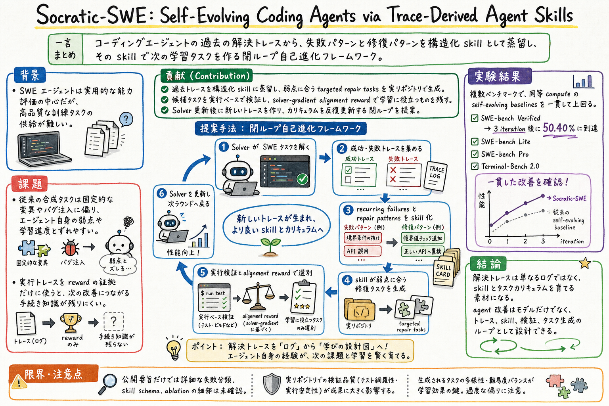

第一の貢献は、過去の agent-solving traces から structured agent skills を蒸留すること。これはログ要約ではなく、失敗パターンと修復パターンを次の行動に使える形へ変換する。

この論文の何がいいか
この論文が良いのは、agent のログを「反省材料」で止めないところだ。失敗トレースを読んで運用ルールを足すだけだと、skill や MEMORY はすぐ厚くなる。しかし厚くなったルールが、次の行動で本当に効いたかは別問題になる。
Socratic-SWE は、トレースを skill にし、その skill から次のタスクを作り、実行で検証し、solver を更新する。つまり、ログ、スキル、テスト、改善を一本の循環にしている。Codex skill や learn-from-logs の運用を考える時、この見方はかなり直接使える。
特に重要なのは、skill が単に prompt に追記される知識ではなく、次のカリキュラムを作る材料になっている点だ。良い skill は、次に何を試すべきかを決める。ここまで含めて skill engineering と見ると、個人AIアシスタントの改善設計が一段具体になる。
どんな論文か
Socratic-SWE は、LLM-driven software engineering agent を自己進化させるために、過去の解決トレースを structured agent skills へ蒸留する論文である。コーディングエージェントの改善を、モデル単体の能力向上ではなく、トレース、スキル、タスク生成、検証、solver 更新のループとして扱う。
既存の synthetic task generation は、固定的な mutation や bug injection に寄りやすい。すると、今の agent が実際に苦手としている失敗パターンや、うまく直せた修復パターンから外れた課題が増える。Socratic-SWE は、agent が実際に残した成功・失敗トレースを読み、recurring failures と repair patterns を抽出する。
抽出された知識は、単なるログ要約ではなく、次に使える skill として構造化される。その skill は、実リポジトリ上で targeted repair tasks を作るために使われ、候補タスクは execution-based validation と solver-gradient alignment reward で選別される。
arXiv abstract によれば、SWE-bench Verified、SWE-bench Lite、SWE-bench Pro、Terminal-Bench 2.0 で、同等 compute の self-evolving baselines を一貫して上回り、SWE-bench Verified では 3 iteration 後に 50.40% に到達したと報告されている。
この論文は、software engineering agents の訓練と改善において、高品質なタスク供給がボトルネックになる問題を扱う。SWE agent は実用的な評価対象として重要だが、agent が学ぶべきタスクをどう作るかは難しい。
Socratic-SWE の発想は、agent がすでに解いた、または失敗したタスクのトレースに、次の学習タスクを作るヒントがあるというものだ。成功トレースには修復手順があり、失敗トレースには recurring failure がある。これらを捨てず、skill として再利用する。
課題と貢献
第二の貢献は、得られた skill を使って targeted repair tasks を生成すること。汎用的な合成バグではなく、solver の弱点や学習進度に合うタスクを作る。
第三の貢献は、候補タスクを実行ベースで検証し、solver-gradient alignment reward で学習に役立つものを選ぶこと。タスクを作っただけで採用せず、実際に改善方向と合っているかを見る。
第四の貢献は、この process を反復する closed-loop self-evolution として設計していること。solver update 後に新しいトレースが生まれ、それが次の skill とタスク生成へ戻る。
手法のしくみ
1
まず solver agent が software engineering task を解く。ここで、成功、失敗、途中の tool use、修復の試行、検証結果を含む trajectory が残る。
2
次に、その trajectory から recurring failures と repair patterns を取り出す。どの種類の変更でつまずいたか、どの観察やテストが修復に効いたか、どの手順が再利用できるかを skill として構造化する。
3
構造化された skill は、次の targeted repair task generation に使われる。つまり skill は、agent に読ませる知識であるだけでなく、弱点に合う新しい訓練タスクを作る generator の材料になる。
4
生成された候補タスクは、実リポジトリ上で実行可能か、検証できるかを execution-based validation でふるいにかける。ここで、見た目だけ plausible なタスクや検証不能なタスクを落とす。
5
さらに、solver-gradient alignment reward により、そのタスクが solver の改善方向に合っているかを見る。単に難しいタスクではなく、今の solver が学ぶ価値のあるタスクを残す。
6
最後に、選別されたタスクで solver を更新し、新しい solver がまた SWE task を解く。この更新後のトレースが次の反復の材料になり、skill と curriculum が進化していく。
検証結果
arXiv abstract では、Socratic-SWE が SWE-bench Verified、SWE-bench Lite、SWE-bench Pro、Terminal-Bench 2.0 で、同等 compute の self-evolving baselines を一貫して上回ったと報告されている。
特に SWE-bench Verified では、3 iteration 後に 50.40% に到達したとされる。これは、単発の合成タスク追加ではなく、トレースから skill とタスクを更新し続けることが効いたという読みになる。
ただし、このページでは abstract と arXiv メタデータを中心に確認している。詳細な ablation、skill schema、評価設定の細部は、PDF 本文を精読してから扱うのがよい。
課題と議論
この論文を実務に移す時の核は、失敗ログをどの粒度で skill 化するかだ。抽象化しすぎると一般論になり、細かすぎると再利用できない。失敗パターン、修復パターン、検証方法、適用条件を分けて残す必要がある。
もう一つの論点は、skill からタスクを作る時の検証である。人間の反省メモなら『次から気をつける』で済むが、agent の改善ループでは、その skill が作ったタスクが本当に実行可能で、改善に効くかを gate する必要がある。
個人AIアシスタント運用に引き寄せるなら、learn-from-logs の出力を MEMORY 追記で終わらせず、次に失敗しやすい代表課題、回帰テスト、skill 更新候補、拒否した更新候補に分ける設計が考えられる。
次に読むなら
- 次に読むなら、SkillOpt、MUSE-Autoskill、SkillEvolBench と並べるとよい。SkillOpt は skill を trainable external state として扱い、MUSE-Autoskill は skill の lifecycle、SkillEvolBench は経験から procedural skill へ変わるかの評価を見る。
- 実装に落とすなら、既存の skill 更新ログから、失敗トレース、修復パターン、適用条件、検証タスク、reject reason を分けた小さな台帳を作るのが第一歩になる。
- 深掘りするなら、PDF 本文で skill schema、task generator、validation、alignment reward、各ベンチマークの ablation を確認する。
読後Q&A
この論文の中心問いは？
coding agent の過去トレースを、次の skill と訓練タスクを作る材料として使えるか、という問い。
Socratic-SWE は何を自己進化させる？
solver agent と、その solver に合わせた skill、targeted repair tasks、カリキュラムを閉ループで更新する。
trace-derived agent skills とは？
agent が過去に残した成功・失敗トレースから、繰り返す失敗や修復パターンを抽出し、次の行動やタスク生成に使える形へ構造化した skill。
従来の synthetic task generation と何が違う？
固定的な変異やバグ注入ではなく、solver の実際のトレースから弱点や修復手順を取り出し、それに合う targeted repair tasks を作る点が違う。
なぜ execution-based validation が必要？
生成されたタスクが見た目だけ plausible でも、実リポジトリ上で実行・検証できなければ訓練に使いにくい。実行で候補をふるいにかけるために必要。
solver-gradient alignment reward は何のため？
候補タスクが今の solver の改善方向に合っているかを評価するため。単に難しいタスクではなく、学習に効くタスクを残す。
結果として何が示された？
abstract では、SWE-bench Verified、SWE-bench Lite、SWE-bench Pro、Terminal-Bench 2.0 で同等 compute の self-evolving baselines を上回り、SWE-bench Verified では 3 iteration 後に 50.40% に到達したと報告されている。
個人AIアシスタント運用にどう効く？
ログから MEMORY や skill を追記するだけでなく、次の検証タスク、回帰テスト、reject buffer まで作る改善ループとして設計できる。
読む時に注意することは？
このページは abstract と arXiv メタデータを中心にした読書導線なので、skill schema、ablation、評価設定の詳細は PDF 本文で確認する必要がある。
関連して読むなら？
SkillOpt、MUSE-Autoskill、SkillEvolBench、Counterfactual Trace Auditing が近い。skill の生成、評価、更新、効果監査をそれぞれ補える。